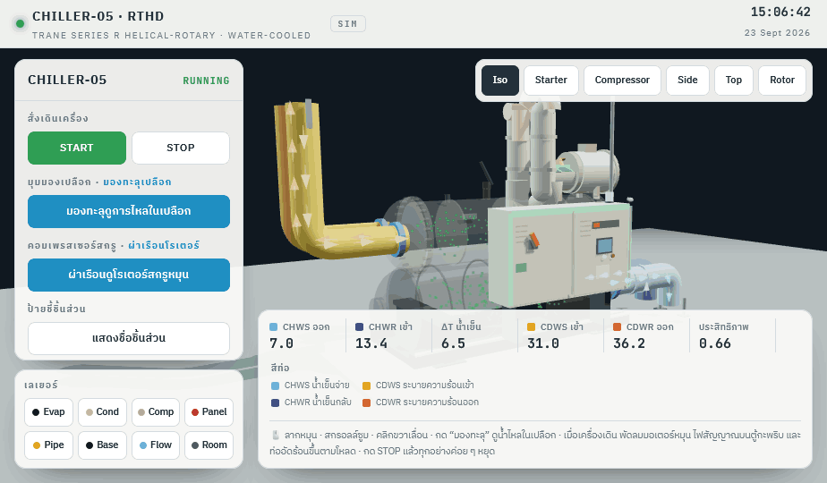
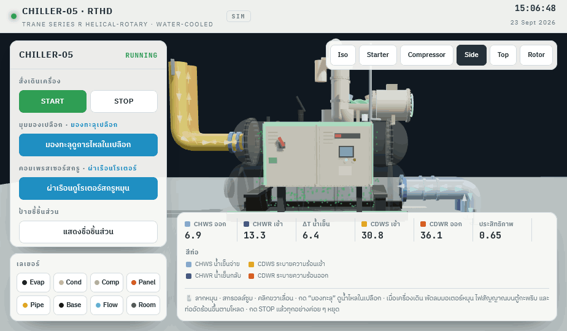
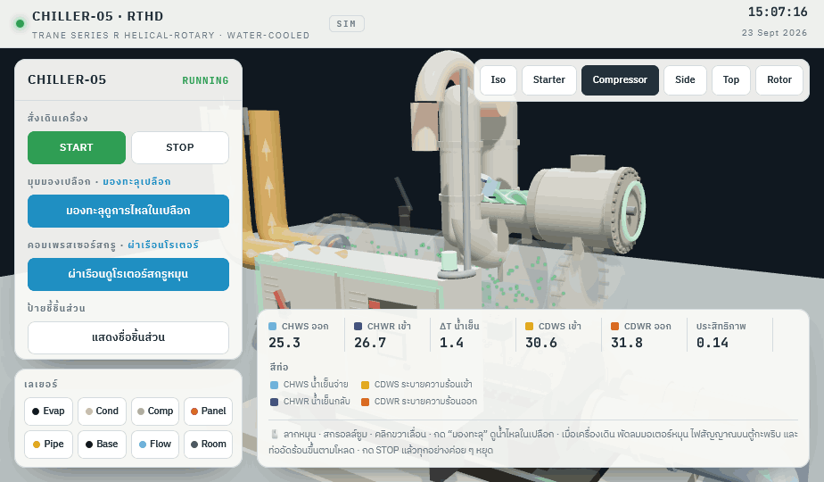
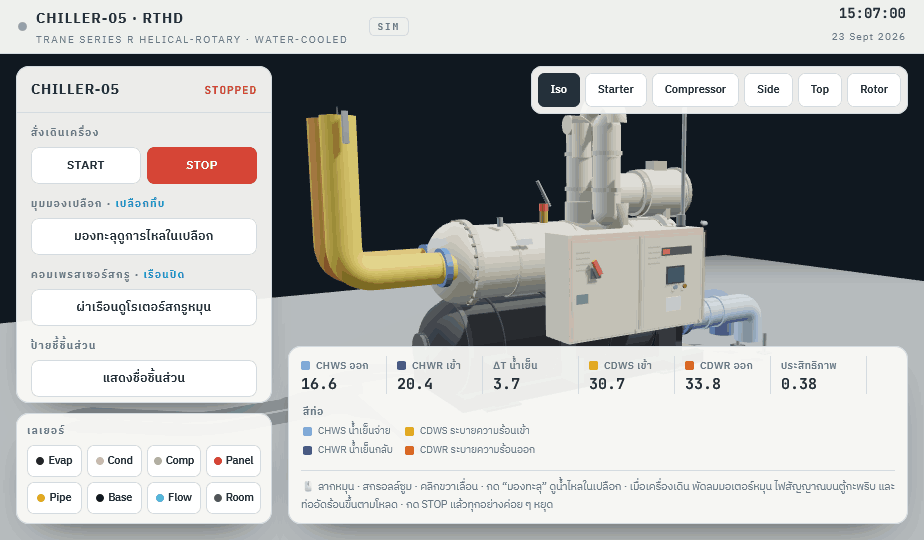

Chiller-05 RTHD — 3D View v3
Silom Complex · Draft for review
23 Sept 2026

1. Running (Iso)See-through shell shows refrigerant boiling in the evaporator. Flow darts run inside the CHW / CDW pipes in each pipe's own colour.

2. Side viewCHWS / CHWR at floor level, CDWS / CDWR from the ceiling, as on site.

3. Screw compressorHousing cut open to show the male / female screw rotors turning while the chiller runs.

4. StoppedSTOP clears all animation: rotors, boiling and flow darts stop, and the status changes to STOPPED.
Interactive version: Chiller RTHD 3D v3 (standalone).html — rotate, START / STOP, see-through shell and rotor cutaway buttons on the left panel.